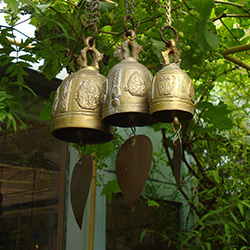

Single image, different size, different styling, different magnifier type, different zoom icon.
Example 3
Small thumbnails on the left, different styling, different zoom frame size, more visible small thumbnails, high detail image examples, no autoplay, no zoom icon, no hint, no easing.

Etalage is a ready to use jQuery image zooming plugin to present your images in the highest detail without leaving the page.
Simply link to the JavaScript and CSS files and apply it to your HTML element like other jQuery plugins. Customize the settings and CSS to match your style and purpose.
Full documentation and examples are included.
Example 1: Some basic styling applied, all default plugin options. Example 2: Single image, different size, different styling, different magnifier type, different zoom icon. Example 3: Small thumbnails on the left, different styling, different zoom frame size, more visible small thumbnails, high detail image examples, no autoplay, no zoom icon, no hint, no easing.
External controls for example 1:
Features
Customizable by CSS and plugin options
Precise positioning of all elements based on your image dimensions and CSS
The small thumbnails are automatically generated, sized and positioned
Low resolution preview (enlarged thumbnail) while downloading the zoomed image (except in IE)
Optional easing of the zoomed image movements
Optional autoplay
Optional descriptions/captions
Unlimited number of images
Align Etalage left/right, with the zoom area on the opposite side
Small thumbnails can be positioned below or on the left/right (vertically)
Multiple instances per page possible
Right-to-left language support
Optional external controls for previous/next/specific image
Advanced: customizable callback functions
Works in all common browsers (and IE6)
Includes documentation and commented source files
Includes an "absolute basic" and 6 more example files to get you started
Plugin options
The large thumbnail width/height
The zoomed image frame width/height
The amount of small thumbnails visible at a time
The position of the small thumbnails relative to the large thumbnail
Animation speeds
Autoplay on/off
Autoplay interval time
Animation easing on/off
Hint image on/off
Zoom icon on/off
Keyboard functionality on/off
Hover or click to zoom
2 Magnifier types (the area around the cursor while zooming)
And more
Requirements
jQuery version 1.4+ (also works with jquery 2.0+)
Implementation
Include the jQuery library
Include the CSS file and optionally customize it with your own styling
Include the plugin JavaScript file
Provide your HTML list of images (see example below)
Invoke the plugin on your list and optionally change the settings to your liking of functionality
Analysis of HTML list
<!-- Give it any id or class to identify it with: -->
<ul id="etalage">
<li>
<!-- This is the large (zoomed) image source: -->
<img class="etalage_source_image" src="/images/large_image_1.jpg"
title="Optionally, your description goes here." />
<!-- This is the thumb image source (if not provided, it will use the large image source and resize it): -->
<img class="etalage_thumb_image" src="/images/thumb_image_1.png" />
</li>
</ul>
More detailed documentation is included, along with the commented source files.
New in version 1.3.4 (jun 2013)
New plugin option: show_begin_end_smallthumb (Whether to show extra thumbnails at the beginning and the end that navigate back to the end or beginning)
Fancybox example pages updated to support version 2+ of that plugin.
Minor performance improvements
New in version 1.3.3 (feb 2013)
Option "smallthumbs_position" can now also be set to top
Option "show_hint" is now false by default
Added fix for unwanted wrapping small-thumb row usually caused by zoomed-in browsers
Bug fixed for when right-aligned small-thumbs didn't scroll in Firefox
New example page: "Aligning" with samples of left/top/right aligning of small-thumbs
New example page: "External controls" to demonstrate how to fire Etalage actions from other elements
Bug fix: When initializing multiple instances by class, the zoom area size differed.
Added right-to-left language support.
Added right-to-left example.
Added Fancybox without using Etalage's zoom area example.
Added duplicate setups example.
Slight performance improvements.
New in version 1.3 (6 march 2012):
Bug fix: Adding links to images now works properly
Bug fix: The loading image would sometimes keep showing when using a single image
New plugin option: smallthumb_select_on_hover (scroll through the small thumbnails when hovering them, instead of clicking them)
New plugin option: zoom_element (ability to supply your own element as a zoom area)
New plugin option: zoom_area_distance (was previously a CSS setting)
New plugin option: hint_offset (was previously a CSS setting)
New plugin option: icon_offset (was previously a CSS setting)
New callback function: etalage_change_callback(image_number, instance_id), where image_number is the new active image
Added an example of using Etalage with Fancybox
Added an example of using callback functions
Added an example of using a custom zoom area element
Minor performance improvements and removal of depricated jquery functions
New in version 1.2.1 (4 september 2011):
Fixed a bug with external controls when there were no small thumbnails out of range
New in version 1.2 (23 july 2011):
Even more precise zoom image positioning.
Bug fixed where the description box would be stretched when positioned at the top.
Click callback function (Good for lightboxes or anything you want to happen on click).
Added plugin option "click_to_zoom". When enabled, clicking the large thumbnail will initiate zooming (instead of hovering it). This does not go together with click-callback functions.
Added plugin option "smallthumbs_position". The small thumbnails can now be positioned on the left or right of the large thumbnail (vertically).
Added plugin option "align". The Etalage container can now be aligned to the right, with the zoom area on the left.
External functions for switching previous/next/to a specific image number.
Note: You should also use the new CSS for this update if you are upgrading from a previous version (at least copy the "functional" section at the bottom; the personal styling section remains the same).
New in version 1.1 (24 april 2011):
Added an optional description area overlaying the zoomed image. Pass the description text through the title attribute of the source image: